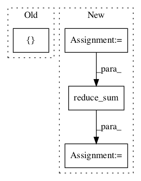

f9b98760f445fc0219cfc9c4cada2b5f9d35ab1b,basic/model.py,Model,_build_loss,#Model#,219

Before Change
losses = tf.nn.softmax_cross_entropy_with_logits(self.concat_logits, tf.cast(concat_y, "float"))
else:
losses = tf.nn.softmax_cross_entropy_with_logits(
self.logits2, tf.cast(tf.reshape(self.wy, [-1, M * JX]), "float"))
ce_loss = tf.reduce_mean(loss_mask * losses)
tf.add_to_collection("losses", ce_loss)
After Change
losses = tf.nn.sigmoid_cross_entropy_with_logits(
tf.reshape(self.logits2, [-1, M, JX]), tf.cast(self.wy, "float")) // [N, M, JX]
num_pos = tf.reduce_sum(tf.cast(self.wy, "float"))
num_neg = tf.reduce_sum(tf.cast(self.x_mask, "float")) - num_pos
damp_ratio = num_pos / num_neg
dampened_losses = losses * (
(tf.cast(self.x_mask, "float") - tf.cast(self.wy, "float")) * damp_ratio + tf.cast(self.wy, "float"))
new_losses = tf.reduce_sum(dampened_losses, [1, 2])
ce_loss = tf.reduce_mean(loss_mask * new_losses)
if config.na:
na = tf.reshape(self.na, [-1, 1])
In pattern: SUPERPATTERN
Frequency: 3
Non-data size: 4
Instances
Project Name: wenwei202/iss-rnns
Commit Name: f9b98760f445fc0219cfc9c4cada2b5f9d35ab1b
Time:
Author: null
File Name: basic/model.py
Class Name: Model
Method Name: _build_loss
Project Name: calico/basenji
Commit Name: ea60242913a0ce53f4e033fee3be1f55e2ceb7b0
Time:
Author: null
File Name: basenji/metrics.py
Class Name: R2
Method Name: update_state
Project Name: calico/basenji
Commit Name: ea60242913a0ce53f4e033fee3be1f55e2ceb7b0
Time:
Author: null
File Name: basenji/metrics.py
Class Name: PearsonR
Method Name: update_state